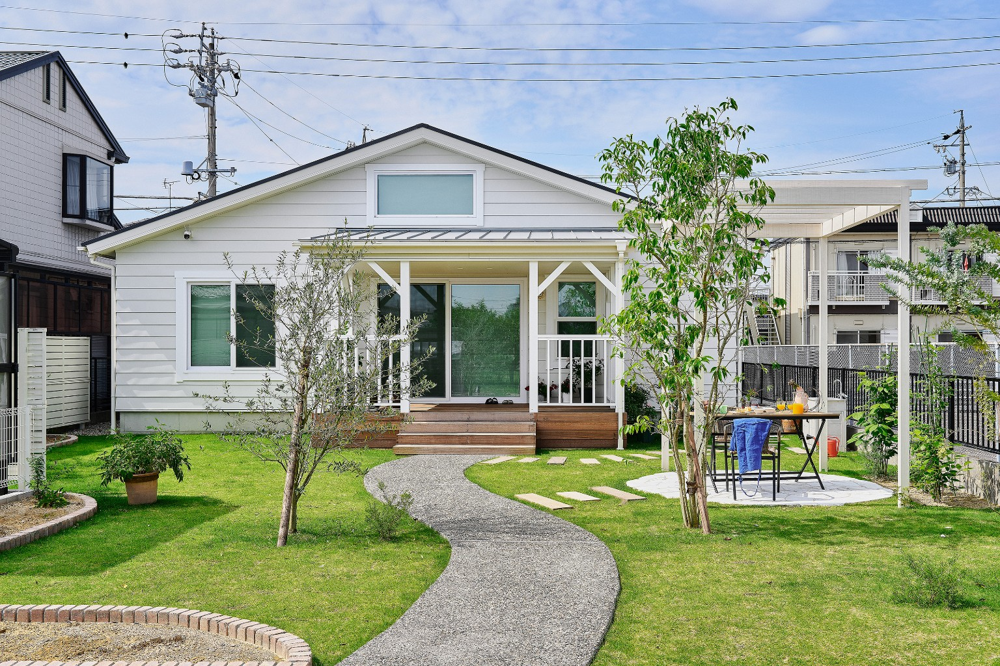
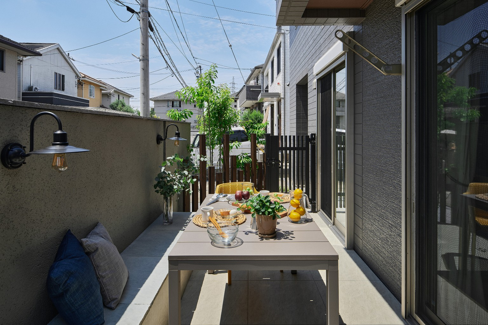
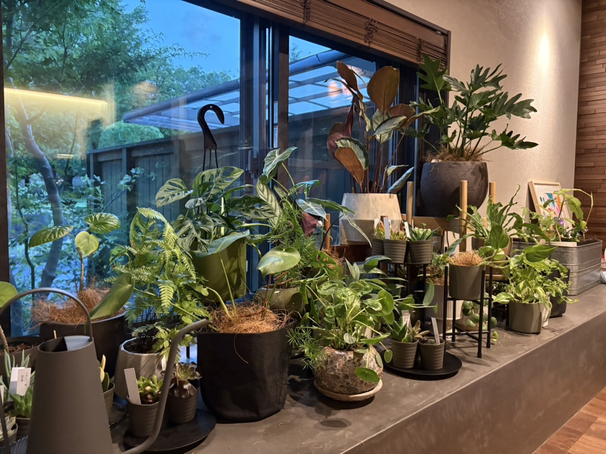

GARDEN DESIGN
見せる庭とくつろぐ庭
植栽・石材・ベンチを組み合わせ、訪れた人にも家族にも心地よい場所へ。
雑草対策も、目隠しも、
くつろぐ場所づくりも。
暮らしに合わせた外構・お庭リフォームを
ご提案します。
今の暮らしに合わなくなった外まわりを、
使いやすく心地よい空間へ整えます。
夏になるたび雑草が増え、休日が草取りだけで終わってしまう。
庭に出ても落ち着かず、せっかくのスペースを使えていない。
広さはあるのに、何を置けばよいか、どう活用すればよいかわからない。
安心して遊べる場所や、家族で過ごせるスペースがほしい。
車が増えた、出入りしづらいなど、今の動線に不便を感じている。
小さな工事だから頼みづらい、イメージをうまく伝えられない。

休日に外で食事をしたり、夜の照明を楽しんだり。お庭は、つくって終わりではなく、その後どう過ごすかが大切です。

植栽・石材・ベンチを組み合わせ、訪れた人にも家族にも心地よい場所へ。

外構だけでなく、空間に合う植物やグリーンの取り入れ方もご相談いただけます。
部分的な工事から、お庭全体の
リフォームまで対応します。
今の暮らしに本当に合う方法を一緒に考えます
見た目だけでなく、日々の使いやすさや
お手入れも考えます。
「これだけでも頼める？」という内容も
お気軽にご相談ください。
内容と費用をご確認いただき、
納得してから進めます。
岐阜・愛知を中心に、
身近な相談先を目指しています。
まだ具体的に決まっていない段階でも大丈夫です
はい。まずはご希望やお悩みをうかがい、必要に応じて現地確認とお見積りをご案内します。
フェンスの一部、植栽、手すりなど、小さな工事もご相談ください。
写真や普段のお困りごとをもとに、一緒に方向性を整理します。
岐阜・愛知を中心に対応しています。（対応できないエリアもございます。）その他の地域もお問い合わせください。